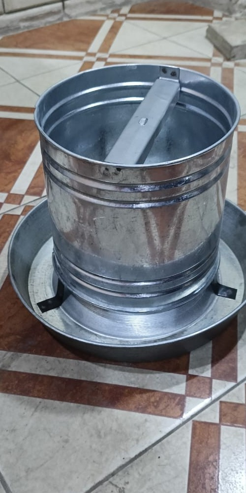
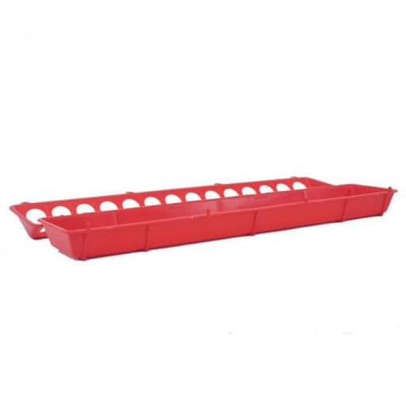

علافات يدوية
علافات يدوية بأنواع مختلفة
هذا البند يجمع العلافة الصاج والعلافة البلاستيك والعلافة الطولية، ليظهر للعميل تنوع المستلزمات اليدوية المتاحة داخل نفس القسم.
- مناسبة للتغذية اليومية في المزارع الصغيرة والمتوسطة
- تغطي أكثر من شكل استخدام داخل نفس الفئة
- تفصل المستلزمات اليدوية بوضوح عن أنظمة التغذية الآلية